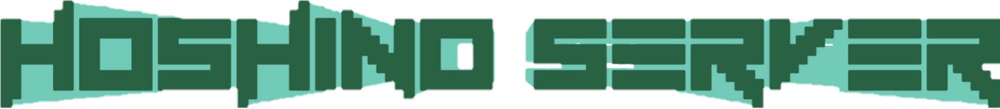

TOPページ
お知らせ
2022年8月22日
本拠点の地下鉄ホーム(3面6線)が仮完成しました。 残り1面2線は他の駅と並行して施工を行う予定で、竣工予定日は9月10日です。
本拠点駅に乗り入れを希望する方はお知らせください。
2022年8月19日
本拠点に地下鉄を作っています。
MinecraftはMojang ABの登録商標です。本サーバーはMojang社から承認されておらず、Mojang社とは関係ありません。
Copyright © 2021 Hoshino Server. All Rights Reserved